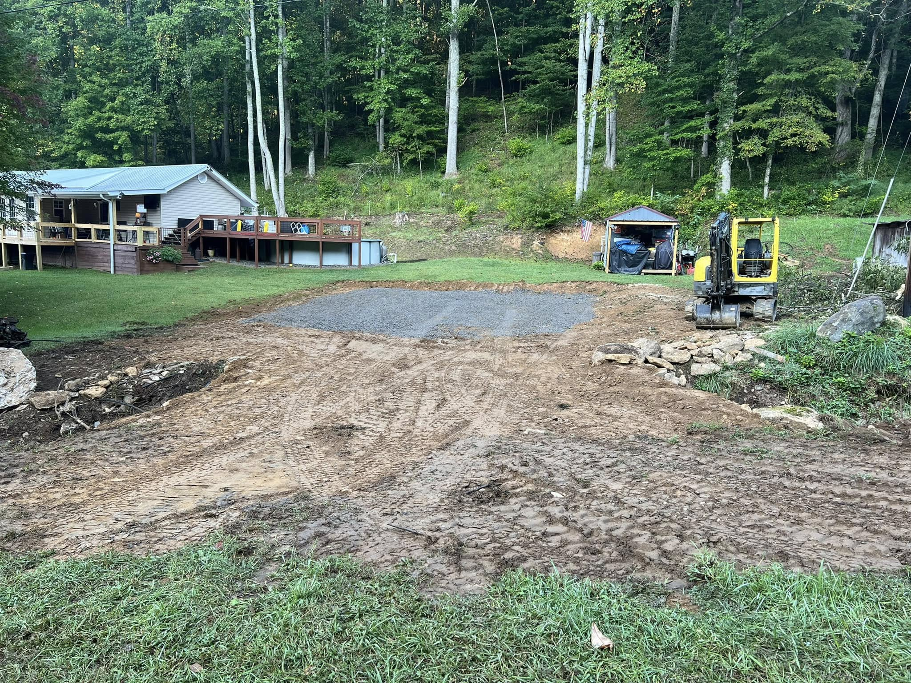
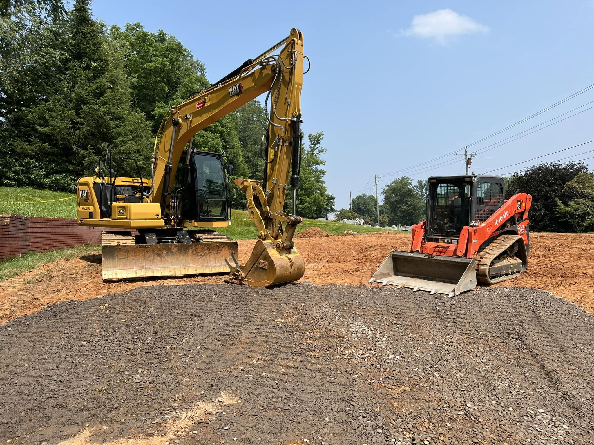
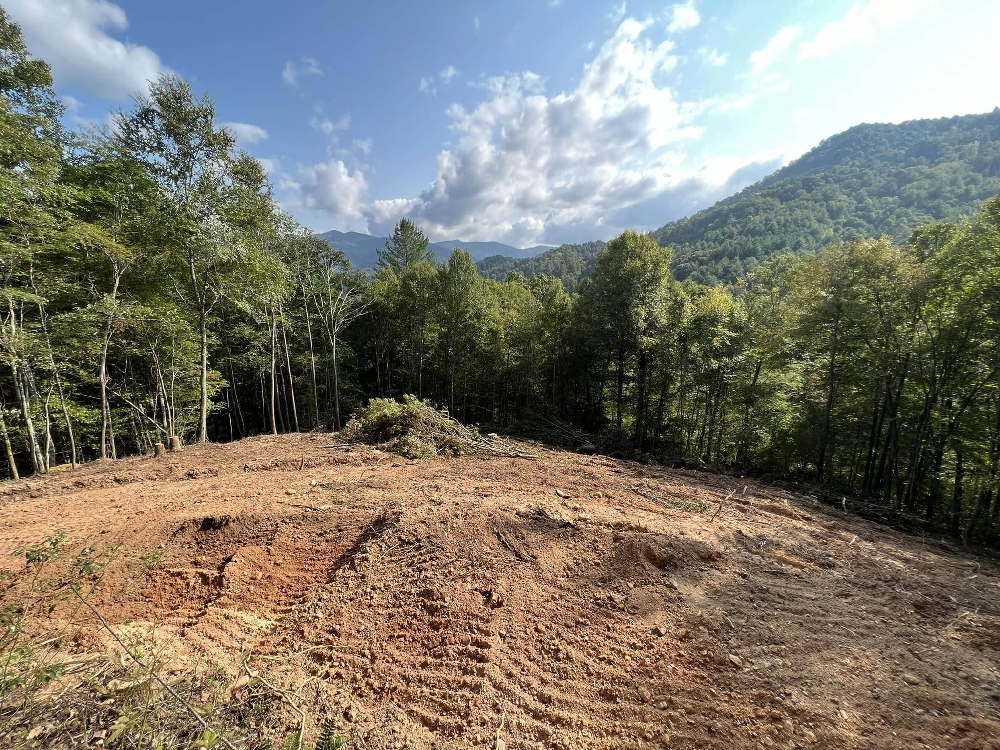
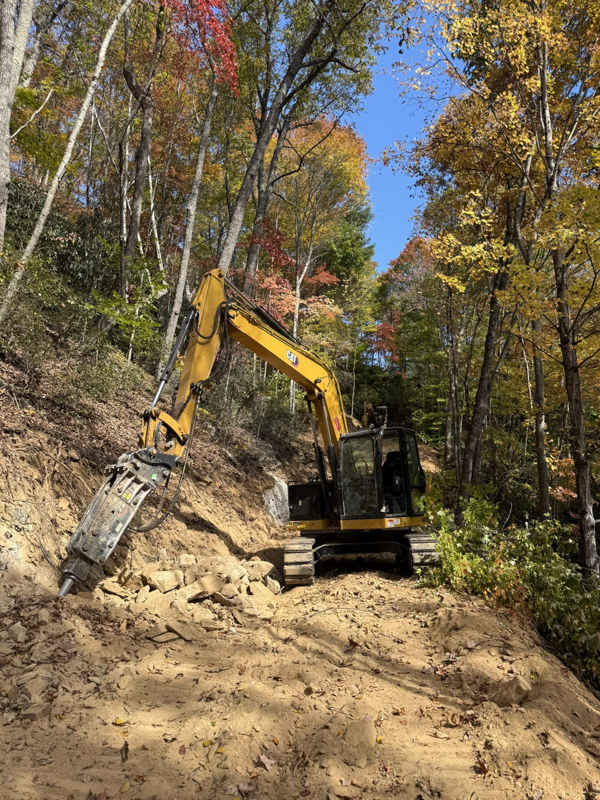
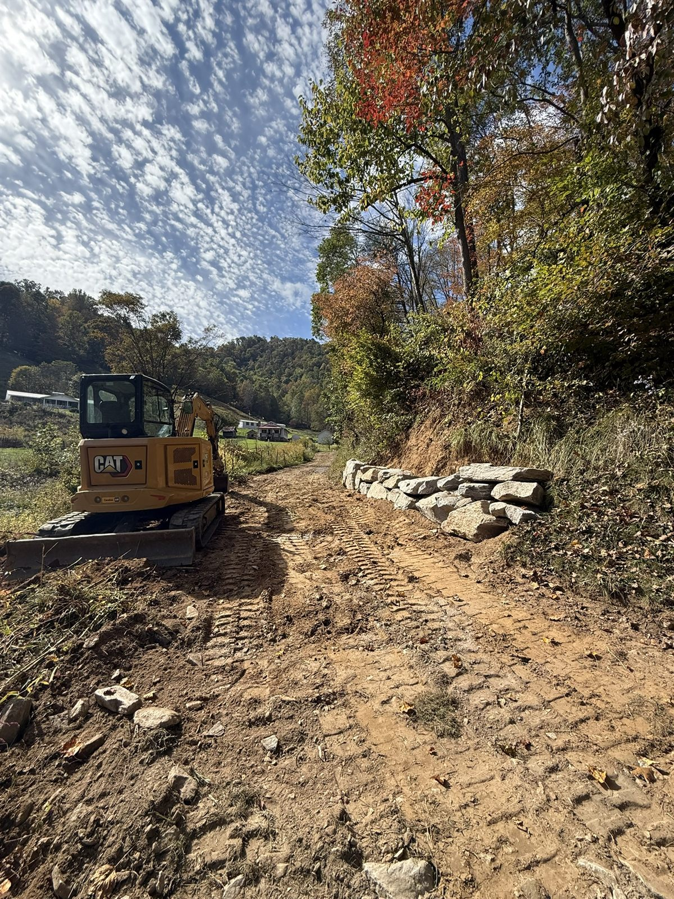

Clearing & Grubbing
Trees, brush, and root mat removed and grubbed out so the subgrade starts clean and stable, not knocked down and full of organics.
Every project starts in the dirt. We move it, shape it, and lock it down: clearing, cut and fill, undercut, subgrade, and building pads ready for the next trade across Yancey, Mitchell, Avery, and the surrounding WNC counties.

Before footings, before slab, before anyone frames a wall, the ground has to be right. AGLM handles the full excavation scope: clearing and grubbing, mass earthwork, cut and fill to balance the site, undercut excavation to pull out soft or unsuitable soil, and subgrade prep that gives you a stable base to build on.
From there we shape and compact the building pads, roadways, and parking areas to spec, so what we hand off is a flat, solid, engineered surface. Because we self-perform the whole site-work scope, one accountable crew carries the job from raw ground to ready-to-build, with no waiting on a second contractor to show up.
The full earthwork scope handled by one crew, from raw ground to a compacted, build-ready pad.
Trees, brush, and root mat removed and grubbed out so the subgrade starts clean and stable, not knocked down and full of organics.
Earth moved and balanced across the site so high spots feed low spots, cutting haul costs and getting you to grade faster.
Soft, wet, or unsuitable soil cut out and replaced with engineered fill, then proof-rolled so the base under your pad holds up.
House sites, shop slabs, and commercial pads shaped, filled in lifts, and compacted to spec for a flat, engineered surface.
Rock ripped, excavated, and reset, boulders placed, and benches cut into the grade so a hard mountain lot ends up usable.
Trenches and footing excavation cut clean and to depth for utilities, foundations, and drainage runs ahead of the next trade.

We rip, excavate, and reset rock and place boulders to turn ledge and steep ground into a level, buildable pad.
On steep lots we cut benches and compact fill in lifts so the pad sits solid and the slopes stay put.
A licensed commercial GC on the job, not a one-truck outfit. You deal with the owner.




It covers the dirt work that turns raw ground into a buildable site: clearing and grubbing, cut and fill, undercutting bad soil, building stable subgrade, and shaping and compacting pads, roadways, and parking to spec. Because we self-perform, one crew handles the whole sequence instead of stacking up subs.
Yes. Rock and steep slopes come with the territory in Western NC. We excavate, rip, and reset rock, place boulders, and cut benches into the grade so a lot that looked unbuildable ends up with a solid, level pad and safe access.
It depends on the volume of cut and fill, the soil and rock you run into, the slope, and how far material has to be moved or hauled. We do not throw out a number sight unseen. We walk the site with you and give an honest quote based on what is actually in the ground.
Yes, and that is the point of hiring a self-perform contractor. We take the site from clearing and grubbing through mass excavation, subgrade, drainage, and final compacted grade with one accountable crew, so the job moves straight through without waiting on a second contractor.
Tell us about the property and the scope. We'll get back fast.